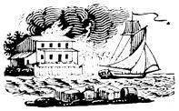

Well, I suppose that E. Martini (Dear MOTHER NO. 16) is just suggesting, but not recommending, what everybody with a wood or coal stove shouldn't do but does anyway ("if you're desperate, a few drops of white gas on the paper and a long taper to light the fire might help, but I don't recommend this").
For years, in press releases and safety talks, I've been pointing out the danger of rushing a fire with gasoline or other flammable liquid and I hope that I've convinced a few. But people, being, only human, still assume that accidents happen only to the other guy so every once in a while our volunteer fire department (of which I used to be president) would haul a "crispy critter" out of the black shell that used to be home.
Even though they've incinerated themselves through sheer stupidity (one hot ash or coat in what looks like a cool firebox can cause a fatal explosion), you feel sorry for them . . . but it's the little kids that really tear you up. When Momma tosses a cupful of gas on the kindling and it blows up in her face, she may or nay not get out. Unfortunately, the little kids hardly ever get themselves out and there's nothing harder to take than stuffing a two-year-old into a body bag while he's still warm.
So next time you toss a "few drops" of gas in the stove, I wish you luck . . . and if luck isn't so good, I hope there's a fire fighter nearby with a body bag to carry out as much of you as he can find.
Bill del Guidice
Durbin, W. Va.
The article, "How We Found a Live-Aboard Boat in B.C." (MOTHER NO. 16) mentions briefly that "diesels . . . are safer" . . . three little words that have become personalized for us.
On July 28, 1972, carrying a lunch, jackets and an issue of MOTHER NO. 16, our family hurried along the dock to my brother-in-law's gasoline-powered, gill-netter fishing boat on the way to a day's outing. Less than a minute after we'd boarded, the gasoline engine exploded directly underneath the spot where my small son was standing. He nearly lost his life in the flames of the burning bilge before I could find him and pull him to "safety".
Because of a gasoline engine that had just a pinhole leak in the fuel filter, fumes formed below deck and now our formerly beautiful child must consider himself very lucky to be alive and "functional" . . . meaning he has hands, feet, eyes and ears. Of course, you can't melt all the skin off your face and come out looking very good. My husband and I were luckier: rescuing Roy, we only burned our hands . . . in 12-16 months, they'll work almost like before.
NOW everyone tells us that diesels really are "safer" and we've heard several stories from doctors and nurses - as we lie here in the hospital getting better - about even worse gasoline - engine boat tragedies.
People argue that diesels are more expensive. Our hospital bills have totaled $9,000 already, not including the many visits we'll have to make to doctors over the years for plastic surgery, physical therapy, etc.
For us, now, there'll be no homesteading some place far away from suburban hassles . . . we'll be tied to big city hospitals for a long, long time. Think about it.
Nancy Bartoo
3231 Elderwood Drive
Bethel Park, Pennsylvania 15102
|
 |
|
|